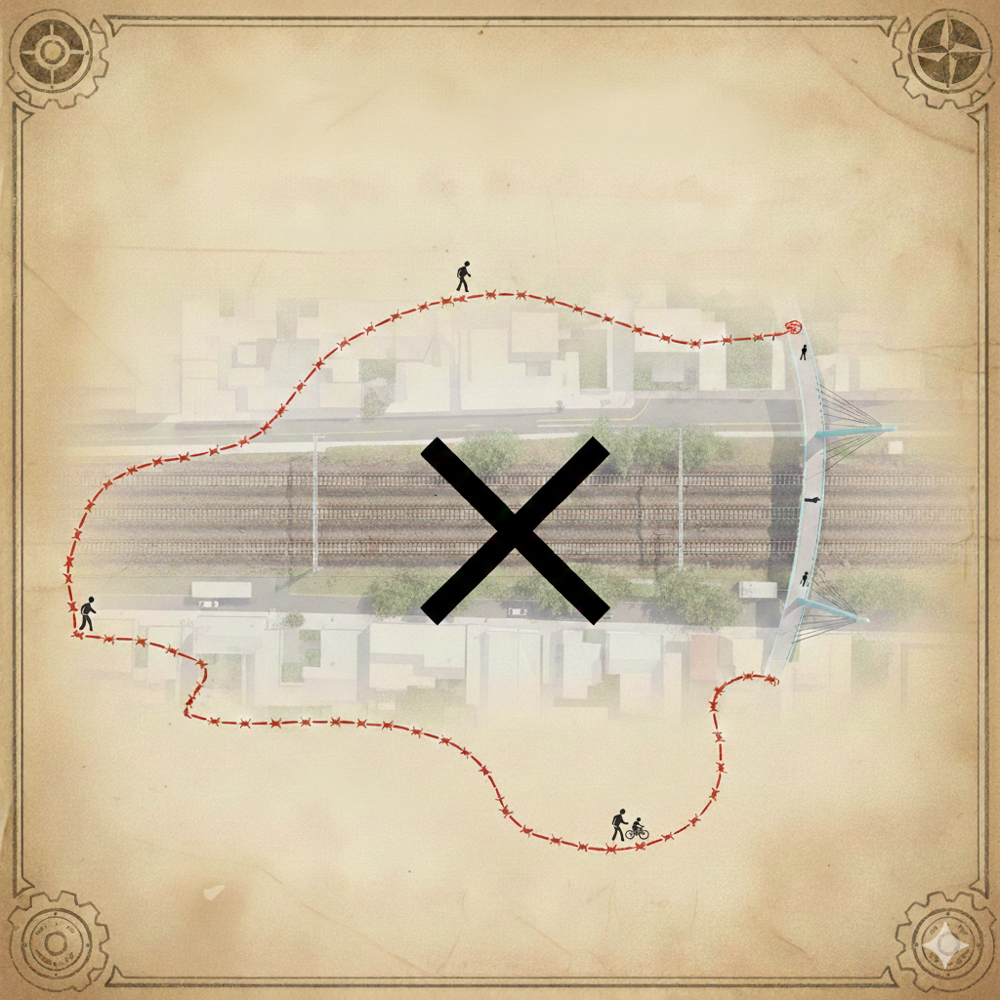
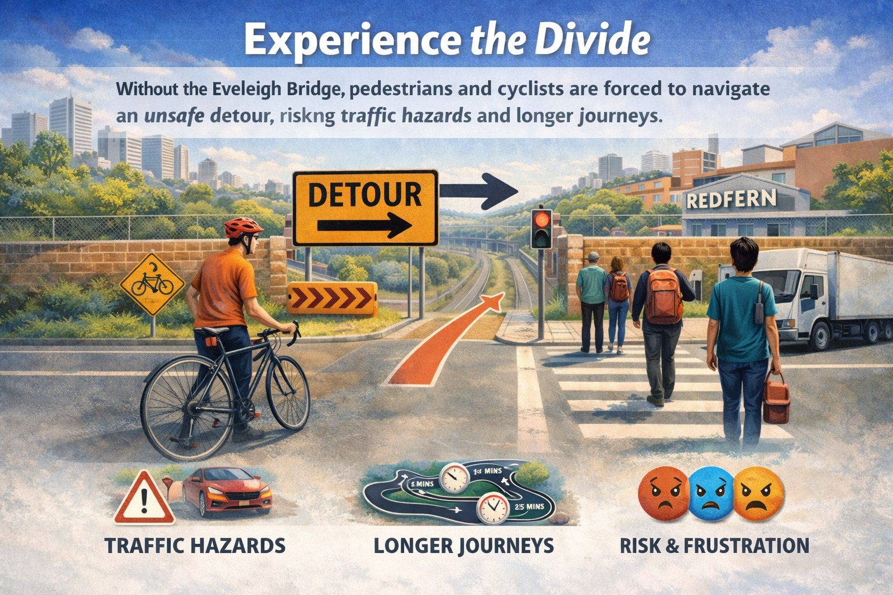

Experience the Divide
Walk the current detour route around the Eveleigh rail corridor and experience the challenge it creates for pedestrians and cyclists. The 3.5 km detour adds unnecessary time and distance to everyday journeys.

Main Detour
North-South connectivity is interrupted for pedestrians and cyclists.

Secondary Detour
Additional detour adds distance and time for daily commutes.